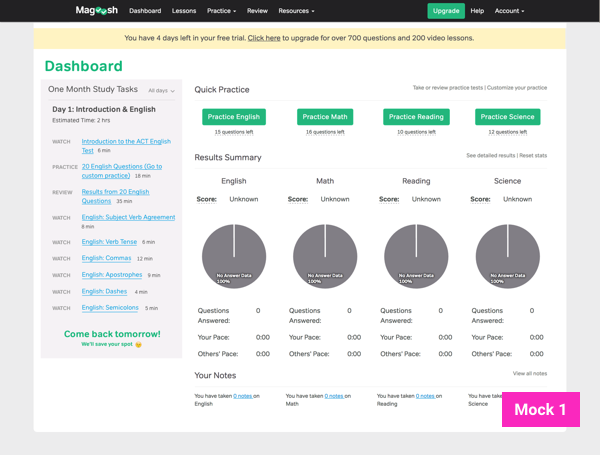
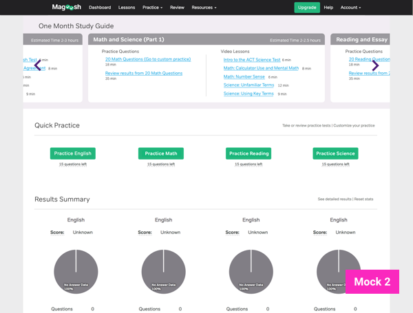
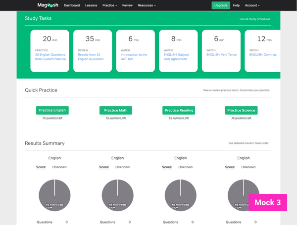
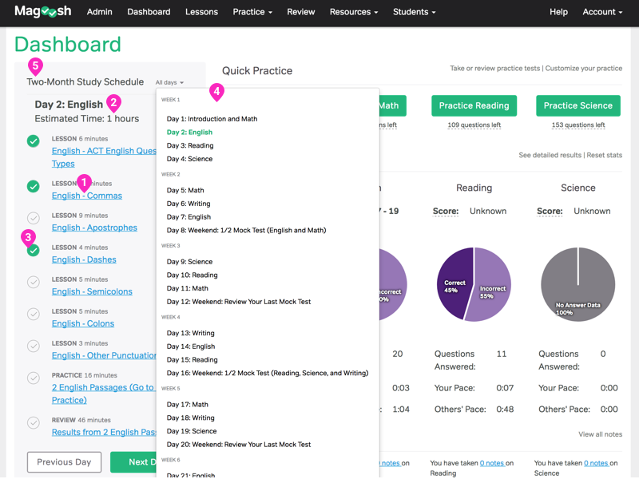

Students can now choose from 3 different study schedules to guide their studies through the Magoosh ACT product.
our goal
Our objective with this new feature was to provide more guidance to ACT students during their studies with Magoosh.
my role
I worked on UX/UI for this feature alongside product manager, Lucas Fink, and engineer, Albert Hu, in April 2017.
We launched this feature in 3 stages over 3 weeks. The complete feature was released in June 2017.
background
After our students finish taking their exam, we send them a customer satisfaction survey to learn about their experience studying with Magoosh. While reviewing survey responses for our ACT product, we saw a number of student and parent complaints about the lack of guidance in our product. We started interviewing students to understand how they were currently using our product.
Here’s a trend that stood out. Students were following the comprehensive study schedules we provide on our high school blog to use alongside the product in order to better structure their studies.
I start studying by pulling up my lesson plan to see where I am for my week’s progress. [...] I read up about Magoosh before purchasing and found the study schedules that way.
I follow the 2 month study schedule week by week, an hour per night, on most nights. I open it in another tab on my browser.
However, their system contained some gaps.
- One student manually summed up the estimated time to complete each task into a daily completion estimate.
- Several students printed out the schedule so they could cross off completed tasks each day.
- Another switched between two browser windows to follow the blog schedule on one window and the web product on another.
- Finally, one copied the schedule into a google doc in order to preserve the links but also have the ability to cross of completed tasks.
This level of problem solving in our students encouraged us to explore adding our blog study schedules into our web app.

On the blog the study schedule is formatted as a long bulleted list of tasks - video lessons to watch, practice questions to complete, or video explanations to review. The tasks are separated out into days and weeks and provides a recommended timeline to complete our materials by. That’s it.
adapting our study schedules for our product
We incorporated a few of our students’ great ideas including daily time estimate and completion status, into 3 designs. We used these to gather feedback with from our students. During testing we looked for 3 key things:
- Visibility - does the user notice the feature without help
- Comprehension - does the user understand the feature
- Usability - can the user use the feature

After testing, we drew out a prioritization matrix to help us unpack our students’ reactions to the mocks.
Although the total count from this structure slight favored mock 2, our team valued comprehension and usability the most. Visibility was something that could be more easily addressed through onboarding to introduce the feature. We found that these were strongest in mock 1 and iterated on this design.
  where we ended up
 Study tasks link directly to materials within the product. This introduced a new way for students to access different types of content such as video lessons or practice questions in our product directly from the dashboard.
Study tasks link directly to materials within the product. This introduced a new way for students to access different types of content such as video lessons or practice questions in our product directly from the dashboard.
Daily time estimate for all tasks. Users remarked positively on this feature without prompting during testing.
Checkmarks to complete tasks. We knew students valued "completing tasks", but we went back and forth on whether the checkmarks should auto-appear once that task link was clicked, or whether checking off tasks manually would give students added motivation and control over their progress. Testers were divided on this interaction as well. We ultimately decided to make this a manual feature to give students ownership over their schedules.
All-days dropdown menu. This feature took into account 2 use cases, seeing a complete overview of the schedule, and jumping quickly to different parts of the schedules for personal focus.
1 month, 2 month or 3 month schedules for different study timelines. The content for each of these schedules was already built out on our blog.
next up
We’ll be gathering usage data on how students interact with the new study schedules. We’ll also be thinking about ways to make to make the schedules work for students with unique study goals, other than having them choose a plan at the start.